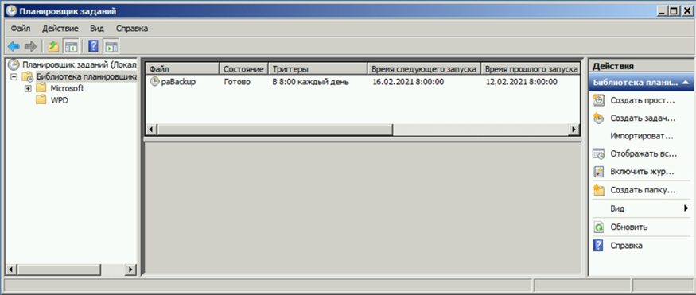
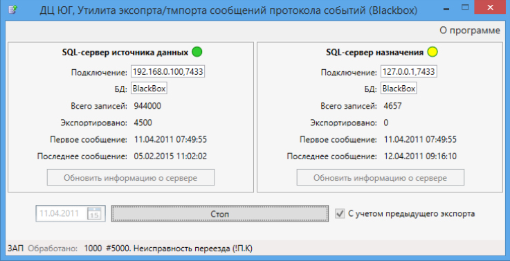

1. Состав исполнителей:
Состав исполнителей на железнодорожных участках:
| Исполнители |
Разряд квалификации не менее |
Количество исполнителей |
| Инженер сервисной организации |
- |
1 |
| Электромеханик центрального поста |
- |
1 |
2. Условия производства работ
2.1. Резервное копирование баз данных, архивов и протоколов событий АРМ производится только на находящихся в резерве автоматизированном рабочем месте поездного диспетчера (далее – АРМ ДНЦ), станции связи и шлюзе-сервере стойки поста ДЦ.
2.2. Работа производится электротехническим персоналом, имеющим группу по электробезопасности при работе в электроустановках до 1000 В не ниже III, перед началом работ проинструктированным в установленном порядке.
2.3. К работе допускается обслуживающий персонал, прошедший специальную подготовку и выдержавший испытания в знаниях условий эксплуатации системы в соответствии с процедурами, принятыми в ОАО «РЖД».
2.4. Допуск на объект, оформление записей в журналах, контроль качества работ, выполняемых подрядными организациями, участие в приемке выполненных работ осуществляется эксплуатационным персоналом в соответствии с требованиями Инструкции по техническому обслуживанию и ремонту устройств и систем сигнализации, централизации и блокировки, утвержденной распоряжением ОАО «РЖД» от 30 декабря 2015 г. № 3168р.
3. Средства защиты, измерений, технологического оснащения; монтажные приспособления, испытательное оборудование, инструменты, техническая документация
Диспетчерская централизация ДЦ «Юг». Руководство по эксплуатации 36818650.39003.001-01 РЭ;
Диспетчерская централизация ДЦ «Юг». Технология обслуживания. Технологические карты по техническому обслуживанию ДЦ «Юг» на базе КП «Круг» 36818650.39003.001-01 ТО.
4. Подготовительные мероприятия
4.1. Подготовить техническую документацию, указанную в разделе 3.
5. Обеспечение безопасности движения поездов
5.1. Резервное копирование баз данных, архивов и протоколов событий АРМ производится в технологическое «окно» с согласия поездного диспетчера (далее – ДНЦ).
5.2. Работа выполняется без оформления записи в Журнале осмотра путей, стрелочных переводов, устройств сигнализации, централизации и блокировки, связи и контактной сети формы ДУ-46 (далее – Журнал осмотра).
5.3. При выполнении работы обеспечить безопасность движения в соответствии с требованиями Инструкции по обеспечению безопасности движения поездов при технической эксплуатации устройств и систем СЦБ ЦШ-530-11, утвержденной распоряжением ОАО «РЖД» от 20 сентября 2011 г. № 2055р.
Примечание. Здесь и далее по тексту целесообразно проверить действие ссылочных документов. Если ссылочный документ заменен (изменен), то при пользовании данной картой технологического процесса следует руководствоваться заменяющим (измененным) документом. Если ссылочный документ отменен без замены, то применяется та часть текста, где не затрагивается ссылка на этот документ
6. Обеспечение требований охраны труда
6.1. При выполнении технологических операций следует руководствоваться требованиями «Инструкции по охране труда для электромеханика и электромонтера устройств сигнализации, централизации и блокировки в ОАО «РЖД» от 03 ноября 2015 № 2616р и «Правилами по охране труда при техническом обслуживании и ремонте устройств сигнализации, централизации и блокировки в ОАО «РЖД» (ПОТ РЖД-4100612-ЦШ-215-2021), утверждёнными распоряжением ОАО «РЖД» от 19 февраля 2021 г. №346/р.
ВНИМАНИЕ. Место работ должно иметь достаточное для их производства освещение. При необходимости следует применять переносные осветительные приборы.
7. Технология выполнения работ
Резервное копирование баз данных, архивов и протоколов событий АРМ
7.1. Проверить выполнение резервного копирования базы данных SQL сервера (протокола сообщений).
7.1.1. Войти на диск «С:/», убедиться в наличии папки «c:/backup».
ПРИМЕЧАНИЕ: Стандартная конфигурация оборудования центрального поста ДЦ «ЮГ» предполагает горячее резервирование компьютеров шлюза-сервера для каждого диспетчерского участка. Программные модули системы выполняют регистрацию сообщений одновременно в основном и резервном хранилище, что обеспечивает автоматическое резервирование базы данных протокола работы системы.
7.1.2. Войти в папку «c:/backup», убедиться в наличие файла «blackbox.bak».
7.1.3. Проверить актуальность файла «blackbox.bak», время обновления которого должно отставать от текущего не более чем на 8 часов.
ВНИМАНИЕ: С помощью встроенных средств бэкапа SQL-сервера каждые 8 часов автоматически выполняется бэкап базы данных SQL, что позволяет автоматически выполнять функцию резервного копирования базы данных сообщений.
7.2. Проверить выполнение резервного копирования архивов состояния объекта (черного ящика).
7.2.1. Войти на диск «С:/», убедиться в наличии папки «c:/armdnc/bd/save».
ПРИМЕЧАНИЕ: Стандартная конфигурация оборудования центрального поста ДЦ «ЮГ» предполагает горячее резервирование компьютеров шлюза-сервера для каждого диспетчерского участка. Запись файлов состояния системы «черный ящик» ведется непрерывно на основном и резервном шлюзе-сервере.
7.2.2. Войти в папку «c:/armdnc/bd/save», убедиться в наличии сжатых суточных архивов в текущем календарном году.
ВНИМАНИЕ: Полный срез информации о состоянии системы сохраняется каждые 1-2 секунды.
ВНИМАНИЕ: Информация за календарные сутки сохраняется в 24 (двадцати четырех) отдельных файлах для каждого астрономического часа и ежечасно добавляется в сжатый суточный архив.
ПРИМЕЧАНИЕ: Время хранения информации не ограничено, по окончании текущего календарного года суточные архивы автоматически перемещаются во вложенную папку «c:/armdnc/bd/save/Архив».
7.3. Проверить выполнение резервного копирования технологического программного обеспечения, включая файлы информационного обеспечения (далее – НСИ).
7.3.1. Войти на диск «С:/», убедиться в наличии папки «c:\armdnc\backup».
7.3.2. Войти в папку «c:\armdnc\backup», убедиться в идентичности файлов в этой папке актуальным файлам технологического программного обеспечения.
ПРИМЕЧАНИЕ: При инсталляции ПО ДЦ «ЮГ» формируется системное задание, автоматически запускающее один раз в сутки резервное копирование файлов технологического программного обеспечения. Копируются исполняемые файлы, конфигурационные файлы, ярлыки, базы данных НСИ и графические схемы станций. Задание выполняется один раз в сутки в 8:00
ВНИМАНИЕ: Если папка «c:\armdnc\backup» отсутствует или пустая, необходимо убедиться, что задание по резервному копированию установлено в системном планировщике заданий. Для этого надо запустить оснастку Планировщика заданий консольной командой «taskschd.msc», выбрать в левой панели окна Планировщика заданий (Рисунок 1) узел «Библиотека планировщика заданий», убедиться, что в списке присутствует строка задания «paBackup», расписание задания корректно настроено (ежедневное выполнение в 8:00). В случае отсутствия задания в списке, необходимо либо повторить процедуру инсталляции программного обеспечения, либо создать задание вручную. При создании задания вручную создается задание «paBackup», ежедневно в 8:00 запускающее командный файл «c:\backup\backup.cmd» (остальные параметры принимаются по умолчанию).

Рисунок 1. Оснастка Планировщик заданий.
7.4. Проверить выполнение резервного копирования при обновлении НСИ.
7.4.1. Войти на диск «С:/», убедиться в наличии папок «c:/armdnc/bd» (базы данных) и «c:/armdnc/pictures» (схемы станций).
ПРИМЕЧАНИЕ: ПО ДЦ «ЮГ» включает средства обновления файлов информационного обеспечения путем загрузки эталонных файлов с шлюза-сервера.
ВНИМАНИЕ: Средствами ПО системы ДЦ «ЮГ» с шлюза-сервера выполняется обновление НСИ на АРМ ДНЦ, станции связи и рабочем месте электромеханика.
ПРИМЕЧАНИЕ: Обновление запускается из следующих модулей:
- Модуль Управление (АРМ ДНЦ) – через меню «Сервис -> Загрузка обновлений НСИ».
- Модуль Станция связи (Станция связи) – через меню «Загрузка обновлений».
- Модуль АРМ ШН – через меню «Загрузить обновления».
7.4.2. Войти в папку «c:/armdnc/bd» (базы данных), убедиться в наличии бэкап актуальной версии НСИ, далее аналогично проверить папку «c:/armdnc/pictures» (схемы станций).
ПРИМЕЧАНИЕ: При загрузке обновлений автоматически выполняется бэкап актуальной версии НСИ с сохранением даты бэкапа. В любой момент времени можно отозвать изменения и восстановить либо последнюю версию НСИ, либо другую версию с помощью аналогичных опций меню «Откат к предыдущей версии». Чтобы обновления вступили в силу необходимо перезапустить соответствующее приложение.
7.5. Проверить работоспособность системы при выполнении миграции базы данных SQL сервера.
ВНИМАНИЕ: Работа выполняется представителями разработчика системы или уполномоченной ей организацией на основании договора на сервисное обслуживание, заключенного установленным в ОАО «РЖД» порядком.
ВНИМАНИЕ: Для выполнения необходимо наличие переносного компьютера (ноутбука) с установленным на нем SQL сервером.
7.5.1. Запустить специализированную утилиту «ImportBlackbox.exe», при этом активируется окно утилиты экспорта/импорта, которое содержит две панели соответственно для SQL-сервера источника данных и SQL-сервера назначения (Рисунок 2).

Рисунок 2. Окно утилиты экспорта/импорта.
ПРИМЕЧАНИЕ: Утилита «ImportBlackbox.exe» предназначена для переноса существующей базы данных протокола работы системы в новое место назначения. Данная процедура выполняется для новой базы данных при полной или частичной замене оборудования шлюза-сервера. Процедура позволяет выполнить «мягкий» перенос данных в фоновом режиме параллельно со штатной работой системы.
ПРИМЕЧАНИЕ: Назначение полей и кнопок панелей окна утилиты:
- Подключение – поле для задания IP адрес и порта SQL сервера.
- БД – поле для задания имени базы данных протокола; по умолчанию имя БД – «Blackbox».
- Кнопка «Обновить информацию о сервере» используется для принудительного обновления информации о сервере при изменении параметров подключения.
- Поле даты используется для задания даты, с которой начинается копирование сообщений, при этом более старые сообщения не будут перенесены.
- Флажок «С учетом предыдущего экспорта» во включенном состоянии исключает повторное копирование записей при внештатном прерывании/возобновлении копирования (включен по умолчанию).
- Кнопка «Старт переноса/Стоп» используется для запуска/останова процесса копирования записей.
7.5.2. Выполнить копирование записей блоками.
ПРИМЕЧАНИЕ: Длительность процесса копирования зависит от общего числа записей протокола и может достигать 1 (одного) часа и более. При необходимости процесс может быть остановлен с последующим возобновлением с помощью кнопки «Стоп».
7.6. В случае невозможности провести резервное копирование баз aданных, архивов и протоколов событий АРМ передать информацию диспетчеру центра диагностики и мониторинга для организации оповещения разработчика системы (центра сервисного обслуживания) для принятия мер.
8. Заключительные мероприятия, оформление результатов работы
После окончания резервного копирования баз данных, архивов и протоколов событий АРМ оповестить ДНЦ об окончании работы, сделать запись в журнале ШУ-2 о проведенной работе и внести результаты выполнения работы в систему ЕК АСУИ в соответствии с требованиями, изложенными в разделе 4 «Порядка планирования, учета и контроля выполнения работ в хозяйстве автоматики и телемеханики», утверждённого распоряжением ОАО «РЖД» от 13 января 2020 г. №20/р.
Результаты работы по сопровождению программного обеспечения специализированная организация оформляет в журнале учета выполненных работ по техническому обслуживанию и ремонту устройств и систем ЖАТ по форме, представленной в регламенте взаимодействия между участниками процесса технического обслуживания и ремонта систем и устройств железнодорожной автоматики и телемеханики ОАО «РЖД», осуществляемых специализированными организациями, утвержденном распоряжением ОАО «РЖД» от 30 декабря 2017 г. № 2827р.
Начальник отдела ПКБ И
Конструктор 1 категории ПКБ И
Е.Н. Иванов
В.В. Харламов